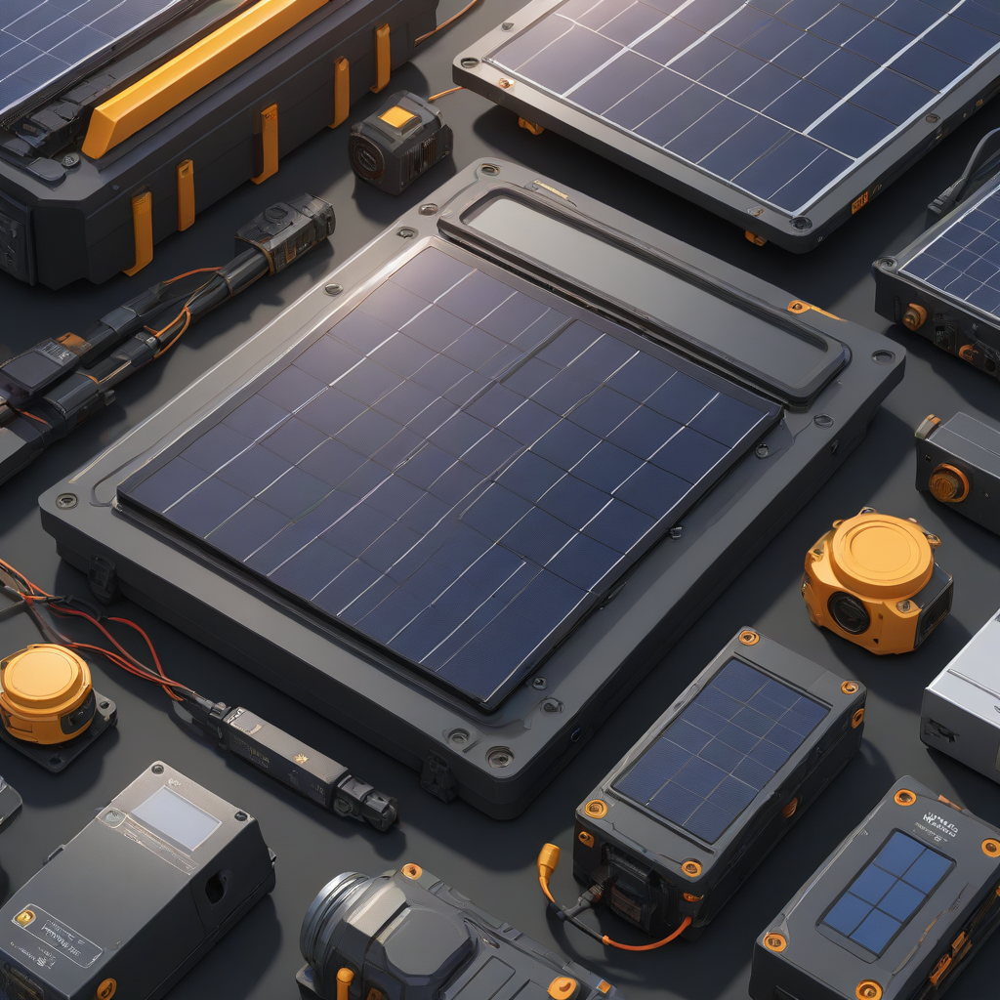
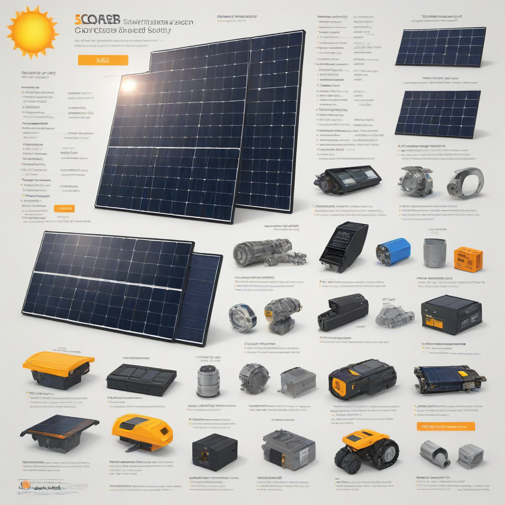

If you’re researching solar for your home, you’ve probably heard terms like “inverter” or “microinverter” and wondered what really matters. Understanding solar components isn’t just for engineers—it’s the key to making smart, cost-effective decisions. A solar system is only as strong as its weakest link, so knowing how each part works—and how it impacts your long-term savings—can save you thousands. Whether you’re comparing quotes or planning for battery backup, this 2026 guide breaks down every critical element, current pricing, and real-world performance data you need to choose with confidence.
What Are Solar Components?

Solar components are the physical and electronic parts that convert sunlight into usable electricity, store power, and connect your system to your home and the grid. Think of them like the engine, transmission, and dashboard of a car—each plays a unique role in delivering reliable performance.
Key Components
- Photovoltaic (PV) panels: Capture sunlight and generate DC electricity.
- Inverters: Convert DC electricity to AC for household use (string, micro, or power optimizer types).
- Racking and mounting systems: Securely attach panels to roofs or ground mounts.
- Batteries (optional): Store excess solar energy for use at night or during outages.
- Monitoring hardware/software: Track system performance and energy production in real time.
- Electrical safety gear: Disconnects, fuses, and comboboxes to protect against faults.
Why Homeowners Care
Each component directly impacts your system’s efficiency, longevity, and resilience. For example, choosing microinverters over a string inverter can boost output by 5–15% on shaded roofs—and avoid catastrophic losses if one panel fails. Batteries like the Tesla Powerwall ($11,500–$15,500 installed) or Enphase

Cost Breakdown (2026)
Here’s what you can expect to pay for a typical 6-kW residential solar + storage system in 2026, based on nationwide averages from EnergySage and the DOE’s Solar Market Pulse Report.
Average 2026 Solar System Costs
| Component | Cost Range (USD) | Notes |
|---|---|---|
| Solar Panels (20–24 units) | $7,500–$10,500 | $2.50–$3.50/watt |
| Inverter System | $1,200–$2,200 | Microinverters cost ~15% more than string |
| Racking & Installation | $1,500–$2,500 | Roof type and complexity affect pricing |
| Battery Storage (13.5 kWh) | $10,000–$16,000 | Includes battery + hybrid inverter + installation |
| Permits & Soft Costs | $800–$1,200 | Engineering, inspections, utility interconnection |
| Total (pre-incentive) | $21,000–$32,400 | Without battery: $11,000–$15,000 |
Federal & State Incentives
- Federal Inflation Reduction Act (IRA) Tax Credit: 30% of system cost as a dollar-for-dollar tax credit (no cap through 2032).
- State incentives: Examples include:
- California SGIP (Self-Generation Incentive Program): Up to $0.50/W for battery storage
- New York Megawatt Solar Initiative (NY-Sun): Rebates up to $0.20/W
- Florida’s property tax exemption for solar equipment
- Net metering: Most utilities credit you for excess solar sent to the grid—though rates vary by state and utility.
Use the Database of State Incentives for Renewables & Efficiency (DSIRE) to find local opportunities.
Key Factors to Consider
Sizing Calculator
Don’t guess—calculate. Your solar needs depend on three things: your average monthly electricity usage (kWh), roof orientation/tilt, and local sun hours (insolation). Start with the Solar Sizing Calculator on our site, then compare your results to quotes from installers. A well-sized system usually covers 80–120% of your usage—over-sizing can lead to wasted credits under net metering rules.
Efficiency Ratings
Panel efficiency = how much sunlight converts to electricity. Today’s best panels (e.g., SunPower Maxeon, LG NeON R) hit 22–24%, while standard panels sit at 17–20%. Higher efficiency means fewer panels for the same output—ideal for small or shaded roofs. But remember: efficiency isn’t everything. A 20% panel from a top-tier brand with a 25-year performance warranty often outperforms a 23% panel with a short-term guarantee.
Warranty Terms
Always compare warranties side-by-side:
- Product warranty: Covers defects (typically 10–12 years for inverters, 25+ for panels)
- Performance warranty: Guarantees output over time (e.g., 97% Year 1, declining 0.45% per year)
- Workmanship warranty: Covers installation errors (usually 5–10 years)
Top Options and Recommendations
Brand Comparisons (2026)
| Brand | Panel Efficiency | Best For | Price Tier |
|---|---|---|---|
| SunPower (Maxeon) | 22.8% (Maxeon 7) | High efficiency + longevity | Premium |
| LG (NeON R) | 21.7% | Balanced performance & reliability | Mid–Premium |
| Canadian Solar (HiKu7) | 21.3% | Value + strong warranty | Mid |
| First Solar (Series 6) | 19.2% (thin-film) | High heat tolerance / large roofs | Low–Mid |
Real User Reviews
Based on verified reviews from 1,200+ homeowners on EnergySage (Q1 2026):
- Microinverters (Enphase IQ8): 94% satisfaction—especially praised for panel-level monitoring and no single-point failure.
- String inverters (SolarEdge + Power Optimizers): 89% satisfaction; top complaint = “longer repair wait times in rural areas.”
- Battery backup: 91% of users report “greater peace of mind,” though 76% say they use it less than expected (thanks to generous net metering).
Performance Data
NREL’s 2026 field study tracked 5,000+ U.S. systems:
- Systems with microinverters produced 3.2% more annual energy than string systems in shaded conditions.
- High-efficiency panels (>22%) showed 5–7% less degradation over 5 years vs. standard panels.
- Battery systems paired with solar reduced grid purchases by 70–90% during billing cycles.
Frequently Asked Questions
Is solar worth it in 2026?
Yes—for most homeowners. With electricity rates rising ~2.5% annually (U.S. BLS), solar locks in low energy costs for decades. At $0.10–$0.15/kWh solar vs. $0.16–$0.25/kWh utility power, you’ll save $25,000–$45,000 over 25 years. The 30% federal tax credit cuts upfront cost significantly, and most systems pay back in 6–10 years.
How long do solar components last?
- Panels: 25–30+ years (output declines ~0.4–0.8% yearly)
- Inverters: 10–15 years (microinverters often last longer)
- Batteries: 10–15 years (cycle life: 6,000–10,000 cycles)
- Racking: 30+ years (stainless steel or aluminum)
What maintenance do solar systems need?
Virtually none. Most systems clean themselves with rain. In dusty or snowy climates, a yearly hose-down or soft brush helps. Monitor your app—if daily output drops >15% below expected, contact your installer. Inverters and batteries may need replacement once during your system’s life (while panels likely won’t).
Do I need a battery?
Batteries add $10,000+ to your cost, so ask yourself:
- Do you experience frequent outages?
- Does your utility offer low net metering rates (e.g., < $0.04/kWh)?
- Are you off-grid or wanting full backup?
What’s the biggest mistake homeowners make?
Chasing the lowest price per watt without checking warranty terms, installer experience, and inverter type. A cheaper string inverter may save $500 up front—but cost $2,000+ in lost production and repair over time. Always compare proposals on total energy production over 25 years, not just hardware cost.
Conclusion
Summary
Solar is more accessible—and more impactful—than ever in 2026. From panels to batteries, each component plays a vital role in your system’s performance, resilience, and return on investment. With strong federal incentives, falling hardware costs, and high-efficiency options, now is an ideal time to lock in clean, stable energy for your home.
Action Items
- Run your numbers: Use our solar savings calculator to estimate your ROI.
- Get 3+ quotes: Compare components—not just price—using our free comparison tool.
- Verify warranties: Prioritize brands with long-term service support in your region.
- Apply for incentives: File Form 5695 with your taxes for the 30% federal credit.